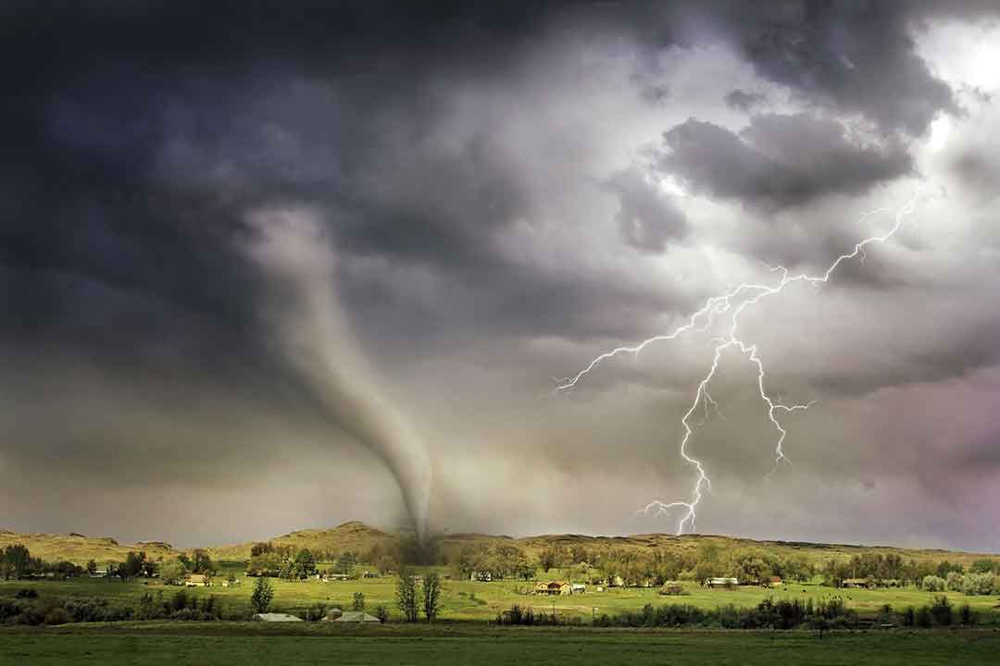
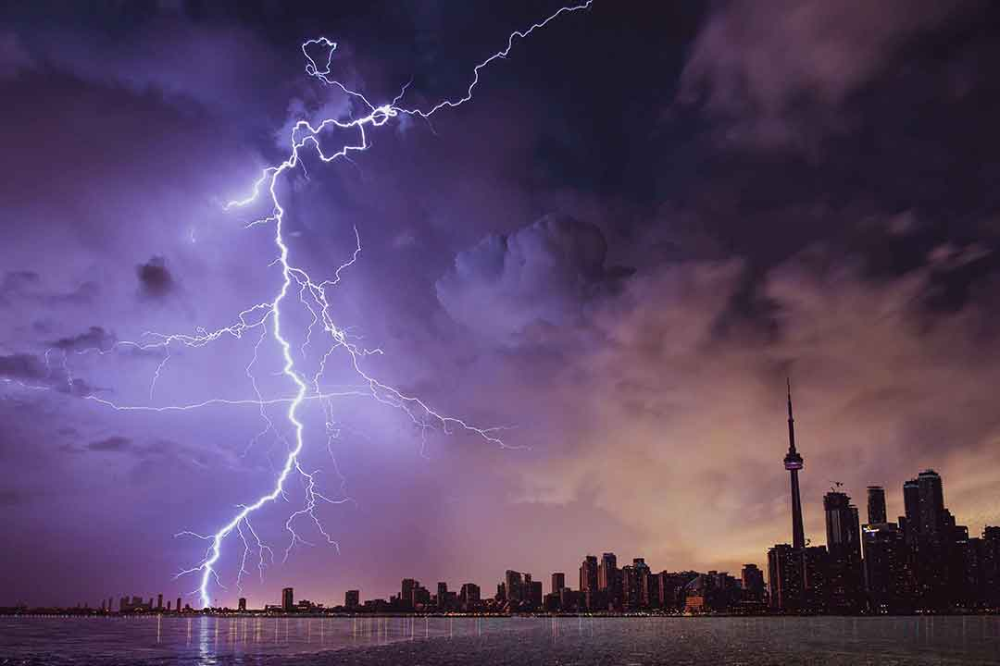
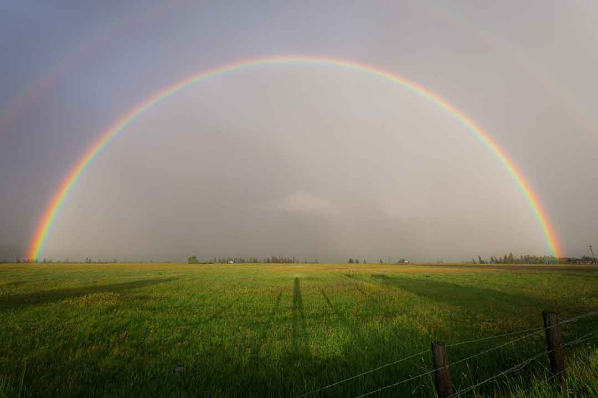
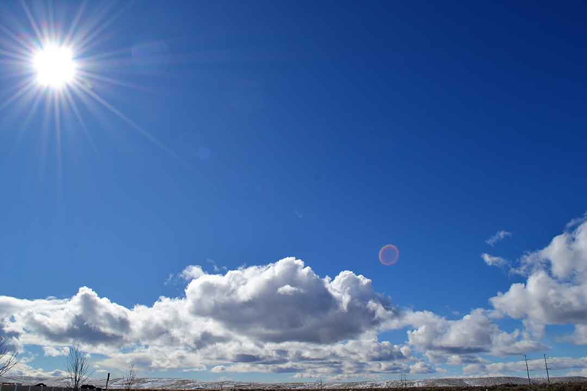

One little cloud is out to-day, One little cloud, and a whole big sky for play— What a big place for a little one, Shine out, you big round sun, Shine out and frighten the little lone cloud, I pray, The sun shone out and the cloud ran away!
Help me take on this world of woe I know I can't do it on my own While people are fading and changing I'm a permanent fixture, watching, waiting Run your fingers down my back to keep me fixed Eradicate my distractions with every kiss And I'll put my hands to your face
Dismal, gloomy is the Future forecast Ominous beta waves carry neural turbulence of mood destruction Nocturnal tempest creates a cyclonic flow Cranial pressure release a petulant downpour — Tsunami tears on the...
call it hurricane season every little fluctuation of the weather makes my mood change quicker than the flicker of a flame my emotions run rampant and free everything on my mind seeks the thrill of fighting
The girl was young. There was lightning in her eyes. She was small but fierce, There was lightning in her eyes. Her face was solemn with lost innocence, There was lightning in her eyes.
When life is beginning to go bad And all your troubles seem to flow All things happening make you sad Follow your rainbow, follow your rainbow When others are being so cruel And you can not find someone to know No one there to speak to you Follow your rainbow, follow your rainbow
Rain, rain, rain My friend Child of the heavens, that falls upon the earth and vast oceans Rain Rain upon the green leaves of trees and wet their trunks and barks. Rain upon the flowers that have blossomed from your mother’s *****. Instill life on lakes and river beds, their streams that dry when you don’t come.
Good morning, good morning Hello there sunrise Your light filters soft As it glows on the skies Good morning, good morning The sweetest fresh air So cool on my face In this moment we share Good morning, good morning Dew drops on the lawn Glistening bright As we welcome the dawn
More often than Christmas More important than New Years Don’t miss the opportunity when the chance is there A sunset while the burning sand touch our feet and We’re standing so close to the water that it tickles our skin Sometimes it’s two people Two objects Or even two spirits We sit and watch the sunset The sunset that broke our hearts The sunset that stole our first kiss The sunset that took our souls